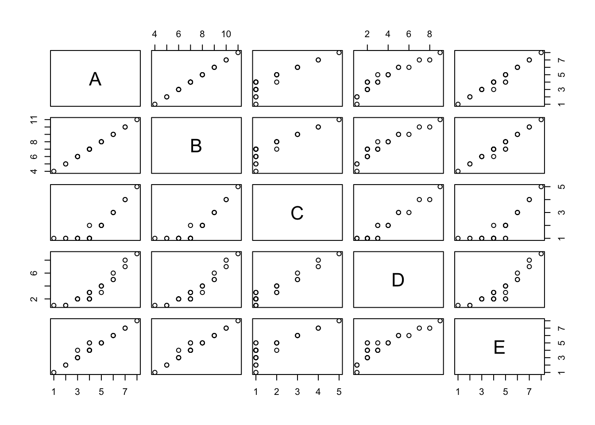

getwd()Introduction to R
Learning Objectives
- What is R?
- Understand R datatypes and classes
- Understand how to use functions in base R
- Import datasets into R
- Inspect and format a dataset
- Create basic graphics
- Run statistical tests
What is R?
R is an extremely powerful programming language for data science, statistical analysis and data visualisation. It is favoured by biologists due to its extensive library of packages for bioinformatics and genomic analysis. In this lesson you will learn how to program and interact with data in R. We will cover the basics of the R syntax, using its built in packages (base R).
Why is R useful?
It’s free! open source software.
It’s Powerful. There are many libraries for application specific tasks.
Bioconductor is a repository for bioinformatics R software.
Tidyverse is a suite of packages for data science with a shared philosophy for storing, manipulating and visualising data.
Presentation quality graphics
- Save as a png, pdf or svg for use in publications and presentations.
Generate reproducible and persistent results
- R commands and analyses can be saved for reproducible and persistent analyses.
- Create automated scripts to replicate analysis on different datasets.
RStudio provides an interactive environment for working in R.
R markdown can generate documents to present your analyses as reports.
Shiny can produce interactive applications for exploratory data analysis.
Working directory
This is the directory used to store your data and results. This is where R will look for files to read in and where it will save any output files. You can check your current working directory with the getwd() function.
If you want to change the working directory you can use setwd("/path/to/new_directory") or use the session menu in RStudio.
Data Types
Values in R are assigned a data type which tells R how to interpret them. Some common data types are:
- numeric: Numbers
- character: Strings of text
- factor: Labels for categorical data (e.g. species, sex)
- logical: TRUE or FALSE values
Data Structures
R uses different data structures to organise data. Common structures are shown below.
Vector
- A collection of values of one data type
- Equivalent to a column in a table
- Items in the vector can be named
- E.g. A collection of recorded mouse weights
## numeric vector
c(12.3, 15.6, 9.8, 7.4) [1] 12.3 15.6 9.8 7.4## A named vector
c(M1=12.3, M2=15.6, M3=9.8, M4=7.4) M1 M2 M3 M4
12.3 15.6 9.8 7.4 Data Frame
- A table
- Essentially a collection of vectors as columns
- Columns can be different data types
- Columns must have the same length
- E.g. A table of mouse weights with columns (Mouse_ID (character), Sex (factor), Weight (numeric))
data.frame(
Mouse_ID = c("M1", "M2", "M3"),
Sex = factor(c("M", "F", "F")), # use the factor function to tell R that this is categorical data
Weight = c(12.3, 15.6, 9.8)
) Mouse_ID Sex Weight
1 M1 M 12.3
2 M2 F 15.6
3 M3 F 9.8Matrix
- A table where all values are related and of the same data type
- Commonly used for correlation and heatmap analysis
- E.g. A table of RNA-seq expression levels where each row is a gene and each column is a different sample.
matrix <- matrix(c(5, 2, 3, 8, 7, 4), nrow=2)
rownames(matrix) <- c("GeneA", "GeneB")
colnames(matrix) <- c("Sample1", "Sample2", "Sample3")
matrix Sample1 Sample2 Sample3
GeneA 5 3 7
GeneB 2 8 4List
- Lists are collections of R objects.
- Each item in the list has a unique index or name.
- A list can contain items of different object types and classes (e.g single values, vectors, data frames, matrices, other lists…).
- E.g. A list containing a data frame of sample information, a matrix of expression values and a vector of gene names.
list(
sample_info = data.frame(SampleID=c("Sample1","Sample2"), Condition=factor(c("Control","Treated"))), # data frame
expression_matrix = matrix(c(5,2,3,8), nrow=2), # matrix of expression values
gene_names = c("GeneA", "GeneB") # vector
)$sample_info
SampleID Condition
1 Sample1 Control
2 Sample2 Treated
$expression_matrix
[,1] [,2]
[1,] 5 3
[2,] 2 8
$gene_names
[1] "GeneA" "GeneB"R Syntax
R is a functional programming language:
- Nearly every command is the name of a function followed by parentheses.
- The inputs to a function, including different options, are placed in the brackets.
- You can use the Tab key to see the options available or use the help documentation for each function.
Typical command structure:
function_name(data, options, moreOptions)Let’s run a function on a real data set. The cars data set is built into base R. We can look at it by typing its name.
cars speed dist
1 4 2
2 4 10
3 7 4
4 7 22
5 8 16
6 9 10
7 10 18
8 10 26
9 10 34
10 11 17
11 11 28
12 12 14
13 12 20
14 12 24
15 12 28
16 13 26
17 13 34
18 13 34
19 13 46
20 14 26
21 14 36
22 14 60
23 14 80
24 15 20
25 15 26
26 15 54
27 16 32
28 16 40
29 17 32
30 17 40
31 17 50
32 18 42
33 18 56
34 18 76
35 18 84
36 19 36
37 19 46
38 19 68
39 20 32
40 20 48
41 20 52
42 20 56
43 20 64
44 22 66
45 23 54
46 24 70
47 24 92
48 24 93
49 24 120
50 25 85We can see that this is a table of values. If we run the class function we will see that R recognises this as a data.frame.
class(cars)[1] "data.frame"Now let’s run a more useful function. The plot function in R is used for making basic graphs. It also has additional arguments which can be altered to change its behaviour. Try plotting the cars data.
## Use the options within the plot function to customise the output
plot(cars, xlab = "Car Speed (mph)", ylab = "Stopping Distance (ft)")
Not all functions need arguments. For instance, the getwd function which returns the path of your working directory.
getwd()Storing objects
We can create objects in R to store data or the output of functions. This is useful for saving data that we want to use later on, or for storing intermediate steps in an analysis.
We can use the = sign or <- to store the output of a function as an object.
## These statements are identical
result = function_name(data, options, moreOptions)
result <- function_name(data, options, moreOptions)Try storing the output of the summary function on the cars data set. You will see the object sum_cars appear in your Environment tab in RStudio.
sum_cars = summary(cars)To see what this object holds, just type its name.
sum_cars speed dist
Min. : 4.0 Min. : 2.00
1st Qu.:12.0 1st Qu.: 26.00
Median :15.0 Median : 36.00
Mean :15.4 Mean : 42.98
3rd Qu.:19.0 3rd Qu.: 56.00
Max. :25.0 Max. :120.00 Getting help
R has extensive built in help documentation. You can access this using the help function. The command below provides the help page for the function read.table
help(read.table)We can also search the help documentation using help.search. Let’s see if we can find a function for running a t-test.
help.search("t test")NOTE quotes are required around strings of text. You do not need to use quotes when referring to names of R data objects or functions.
There is a short cut for help, ?, which shows the help page for a function.
# same as help(read.table)
?read.table?? searches for help pages on functions, same as help.search(“phrase”)
# same as help.search("t test")
??"t test"You can also use the Help tab in RStudio to search for help on functions, or search online.
Key points
- Data types: Understand different data types (numeric, character, factor, logical)
- R objects: Understand different ways to structure data in R (vectors, dataframes, matrices, lists). There are several other types of R object.
- Functions: Code in R is run within functions.
- Help: Use the help features to find out how a function works.
Getting data into R
Getting data into R is often the first step in any analysis.
It is possible to create a vector of data by typing directly into R using the function c. The c stands for combine and can be used to combine values into a vector.
x <- c(1,2,3,4,5)This creates a vector named ‘x’ which stores the numbers 1 through to 5.
You can see what is in an object at any time by typing its name:
x[1] 1 2 3 4 5Character values need to be quoted, otherwise R will look for a data object of that name.
## This produces an error because R is looking for objects called Monday, Tuesday etc. which do not exist.
daysofweek <- c(Monday, Tuesday, Wednesday, Thursday, Friday)## This works
daysofweek <- c("Monday", "Tuesday", "Wednesday", "Thursday", "Friday")You can create data frames from vectors using the data.frame function:
table <- data.frame(Index = x, Day = daysofweek)
table Index Day
1 1 Monday
2 2 Tuesday
3 3 Wednesday
4 4 Thursday
5 5 FridayUsually however, you will want to input data from a file. You can read files on your computer or from a URL. Use the read.table function to read in the table hosted at the URL below.
read.table("http://bifx-core3.bio.ed.ac.uk/data.tsv")R reads this table as a data.frame object and prints it to the R console by default. To save the table, we need to assign it to an object.
mydata <- read.table("http://bifx-core3.bio.ed.ac.uk/data.tsv")Here, mydata is an object name and the syntax <- assigns the output of the function to it. Remember you can also use =.
R stores mydata as a data frame, containing multiple vectors. We can check the class of our object using the class() function. The Environment tab in RStudio can also be used to explore objects and their properties.
class(mydata)[1] "data.frame"We can look at our table by typing its name, but this prints a lot of rows. Using the head() function will only print the first few lines;
head(mydata, n=5) V1 V2 V3 V4 V5
1 A B C D E
2 1 4 1 1 1
3 2 5 1 1 2
4 2 5 1 1 2
5 3 6 1 2 3You can also use the View() command to open data frames in the file pane.
Hmmm, something isn’t right with our rows here…
By default the read.table function assumes certain things from the file
- The file is a plain text file (there are separate functions to read excel files etc.)
- Columns are separated by any number of tabs or spaces
- There are the same number of data points in each column
- There is no header row (labels for the columns)
- There is no column with names for the rows
If any of these are FALSE, then we need to give that information to the function. If it has a header column use the ‘header=TRUE’ argument.
mydata <- read.table("http://bifx-core3.bio.ed.ac.uk/data.tsv", header=TRUE)
# Note that header=T will also work here. TRUE and FALSE can be abbreviated to T and F in R.Note the comma between different parts of the functions arguments.
This overwrites our previous data frame mydata with the correctly formatted one. Let’s look at the first 5 rows again.
head(mydata, n=5) A B C D E
1 1 4 1 1 1
2 2 5 1 1 2
3 2 5 1 1 2
4 3 6 1 2 3
5 3 6 1 2 3Now we can see that the first row contains the column labels (A, B, C, D, E). R has automatically assigned default row names (1, 2, 3 etc.)
Other options for read.table
Use sep = to define how columns are separated in your input file. This file uses the tab character which we can write as “\t”.
mydata <- read.table("http://bifx-core3.bio.ed.ac.uk/data.tsv", header = T, sep = "\t")By default, read.table assumes columns are separated by any amount of white space (space or tabs). This can lead to problems if some of your columns have missing values, so it is good practice to always give a sep argument.
If your data has missing values you can use fill = TRUE.
mydata <- read.table("http://bifx-core3.bio.ed.ac.uk/data.tsv", header = T, sep = "\t", fill = T)This tells R to fill empty spaces in columns with the ‘NA’ character.
As this is such a common task there are functions identical to read.table but with different default settings. e.g. read.delim and read.csv. Check out the help pages for each of these.
Importing Datasets
In the Environment pane in RStudio there is a button called Import Dataset. This can make importing data much easier and calls the read.* set of functions for you. The command used will be displayed on the console. Make sure you save this code so that you can easily re-run the analysis later.
Note that you need to have the file on the computer to use this button.
Inspect and summarise data
Let’s use some simple functions to inspect and summarise our data.
str(mydata) # Shows the structure of a data frame and the data types of each column'data.frame': 27 obs. of 5 variables:
$ A: int 1 2 2 3 3 3 3 3 4 4 ...
$ B: int 4 5 5 6 6 6 6 6 7 7 ...
$ C: int 1 1 1 1 1 1 1 1 1 1 ...
$ D: int 1 1 1 2 2 2 2 2 2 2 ...
$ E: int 1 2 2 3 3 4 3 3 4 4 ...summary(mydata) # Summarises the values in each column A B C D
Min. :1.000 Min. : 4.000 Min. :1.000 Min. :1.000
1st Qu.:3.000 1st Qu.: 6.000 1st Qu.:1.000 1st Qu.:2.000
Median :4.000 Median : 7.000 Median :1.000 Median :3.000
Mean :4.296 Mean : 7.296 Mean :1.778 Mean :3.333
3rd Qu.:5.000 3rd Qu.: 8.000 3rd Qu.:2.000 3rd Qu.:4.000
Max. :8.000 Max. :11.000 Max. :5.000 Max. :9.000
E
Min. :1.000
1st Qu.:3.500
Median :4.000
Mean :4.407
3rd Qu.:5.000
Max. :8.000 Individual columns in a data frame can be accessed using the $ sign (mydata$A mydata$B etc.)
mydata$A # Prints all values in column A [1] 1 2 2 3 3 3 3 3 4 4 4 4 4 4 4 4 4 5 5 5 5 6 6 6 7 7 8summary(mydata$A) # Summary information for column A only Min. 1st Qu. Median Mean 3rd Qu. Max.
1.000 3.000 4.000 4.296 5.000 8.000 mean(mydata$A) # Mean of column A[1] 4.296296Try some other summary functions like mean, median, min and max.
Square bracket notation
We can access specific rows, columns and cells within a data frame using square brackets: TABLE[ROW,COLUMN]. You can experiment with this notation by trying out the following commands.
## Print the value in the first column of the first row
mydata[1,1]
## Use blanks to print an entire row or column
mydata[2,]
mydata[,3]
## You can select multiple rows and columns with ranges (:) or the c() function
## E.g. Print the first 5 rows of columns 3 and 5
mydata[1:5,c(3,5)]
## You can also use row or column names instead of numbers
mydata[,"B"]
## You can select rows or columns based on certain criteria (subsetting).
## E.g. Select all rows where B is greater than 7
mydata[mydata$B > 7,]Ordering data
The order function can be used to sort data frames by a specific column.
order(mydata$B) # Returns the row numbers in the sorted order of column B [1] 1 2 3 4 5 6 7 8 9 10 11 12 13 14 15 16 17 18 19 20 21 22 23 24 25
[26] 26 27# We can use this in the row index position to sort the entire data frame by column B
mydata[order(mydata$B), ] A B C D E
1 1 4 1 1 1
2 2 5 1 1 2
3 2 5 1 1 2
4 3 6 1 2 3
5 3 6 1 2 3
6 3 6 1 2 4
7 3 6 1 2 3
8 3 6 1 2 3
9 4 7 1 2 4
10 4 7 1 2 4
11 4 7 1 2 4
12 4 7 1 2 5
13 4 7 1 2 5
14 4 7 1 3 4
15 4 7 1 3 4
16 4 7 1 3 4
17 4 7 2 3 4
18 5 8 2 3 5
19 5 8 2 4 5
20 5 8 2 4 5
21 5 8 2 4 5
22 6 9 3 5 6
23 6 9 3 5 6
24 6 9 3 6 6
25 7 10 4 7 7
26 7 10 4 8 7
27 8 11 5 9 8Challenge:
See if you can do the following:
- Select the 11th value in the third column
- Select all rows where D equals 4 (hint; use ‘==’)
- Select rows where B has its maximum value (hint: use the max function)
- Select even numbered rows only (hint: take a look at the seq function ‘?seq()’)
- Select columns A, C and E
- Sort table by decreasing order of column B (hint: look at the options in the order function)
Solution.
Solution:
- Select row 11, column 3
mydata[11,3][1] 1- Select rows where D 3 equals 4
mydata[mydata$D == 4,] A B C D E
19 5 8 2 4 5
20 5 8 2 4 5
21 5 8 2 4 5## Note the use of "==" for equality testing. This is a standard programming convention.- Select rows where B has its maximum value
mydata[mydata$B == max(mydata$B), ] A B C D E
27 8 11 5 9 8- Select even numbered rows only
mydata[seq(2,26, by = 2), ] A B C D E
2 2 5 1 1 2
4 3 6 1 2 3
6 3 6 1 2 4
8 3 6 1 2 3
10 4 7 1 2 4
12 4 7 1 2 5
14 4 7 1 3 4
16 4 7 1 3 4
18 5 8 2 3 5
20 5 8 2 4 5
22 6 9 3 5 6
24 6 9 3 6 6
26 7 10 4 8 7- Select columns A, C and E
mydata[, c(1,3,5)] A C E
1 1 1 1
2 2 1 2
3 2 1 2
4 3 1 3
5 3 1 3
6 3 1 4
7 3 1 3
8 3 1 3
9 4 1 4
10 4 1 4
11 4 1 4
12 4 1 5
13 4 1 5
14 4 1 4
15 4 1 4
16 4 1 4
17 4 2 4
18 5 2 5
19 5 2 5
20 5 2 5
21 5 2 5
22 6 3 6
23 6 3 6
24 6 3 6
25 7 4 7
26 7 4 7
27 8 5 8## Or mydata[,c('A','C','E')] - Sort table by decreasing order of column B
mydata[order(mydata$B, decreasing = TRUE), ] A B C D E
27 8 11 5 9 8
25 7 10 4 7 7
26 7 10 4 8 7
22 6 9 3 5 6
23 6 9 3 5 6
24 6 9 3 6 6
18 5 8 2 3 5
19 5 8 2 4 5
20 5 8 2 4 5
21 5 8 2 4 5
9 4 7 1 2 4
10 4 7 1 2 4
11 4 7 1 2 4
12 4 7 1 2 5
13 4 7 1 2 5
14 4 7 1 3 4
15 4 7 1 3 4
16 4 7 1 3 4
17 4 7 2 3 4
4 3 6 1 2 3
5 3 6 1 2 3
6 3 6 1 2 4
7 3 6 1 2 3
8 3 6 1 2 3
2 2 5 1 1 2
3 2 5 1 1 2
1 1 4 1 1 1Filtering data
Square bracket notation can be handy for quickly filtering data frames or checking values, but can get cumbersome for more complex queries.
There is a subset() function in R specifically for filtering tables. This generally works better than using square brackets as it copes well with NA and NULL values.
subset(mydata, mydata$C == 3) A B C D E
22 6 9 3 5 6
23 6 9 3 5 6
24 6 9 3 6 6The tidyverse packages have their own set of functions for filtering data and we will explore these in a later module.
Plotting with R
Base R has many built in functions for plotting data.
We recommend learning ggplot2 for more complex graphics but it is useful to know what base R offers. Remember, to get more information about the options available to a function, type ?function.
Histograms
hist(mydata$A)
The ChickWeight data set is another data frame built into R. It is a larger dataset, containing the weights of chicks on different diets, measured over time. Inspect the ChickWeight data using some of the functions you have used already.
Challenge:
- What type of data is stored in the
weightcolumn? - What is the mean weight of all the chicks?
- What type of data is stored in the
Dietcolumn? - How many rows are in this table (try the
dimornrowfunctions)?
Solution.
Solution:
- What type of data is stored in the
weightcolumn?
class(ChickWeight$weight)[1] "numeric"- What is the mean weight of all the chicks?
mean(ChickWeight$weight)[1] 121.8183- What type of data is stored in the
Dietcolumn?
class(ChickWeight$Diet)[1] "factor"- How many rows are in this table (try the
dimornrowfunctions)?
nrow(ChickWeight)[1] 578hist(ChickWeight$weight)
We can modify the number of vertical columns in a histogram with the argument breaks, to give us increased resolution.
hist(ChickWeight$weight, breaks = 50)
Boxplots
boxplot(mydata)
boxplot(mydata$A, mydata$B, names=c("Value A", "Value B") , ylab="Count of Something")
Scatter plots
plot(x = mydata$A, y = mydata$B)
Take a look at ?plot. You will see that the first argument is ‘x’ and the second is ‘y’. If you don’t name the arguments, the function will assume that the first argument is ‘x’ and the second is ‘y’.
## This works because the first variable is assumed to be x and the second y
plot(mydata$A, mydata$B)If you name the arguments, you can put them in any order.
## This works because the arguments are named
plot(y = mydata$B, x = mydata$A)Earlier, we used the plot function with a single x argument: plot(cars). This worked because the x argument also accepts a data frame and will plot all combinations of columns. Try this for mydata and see what happens.
plot(mydata)
Saving images
There are a few ways to save images in RStudio:
Use a graphics device function in your R code.
Use the png function to save a png file (easy to load into web applications and presentations).
png("filename.png")
boxplot(A, B, names=c("Value A", "Value B") , ylab="Count of Something")
dev.off()The dev.off() function closes the graphics device. In the code above, everything between png() and dev.off() is saved to ‘filename.png’.
You can also save as a pdf.
pdf("filename.pdf")
boxplot(A, B, names=c("Value A", "Value B") , ylab="Count of Something")
dev.off()Statistical testing
R has many functions for statistical testing. We will cover a couple of examples here, but there are many more to explore. Remember, to get more information about the options available to a function, type ?function.
T-test
The t.test function can be used to compare the numerical means of two groups. The t-test should only be used under the following assumptions.
- Each group is approximately normally distributed
- The variance of the two groups is approximately equal
- The two groups are independent of each other
We can use R to simulate a data frame of values for two groups, WT and KO, with 10 values in each group (this could be any sort of experimental measurement).
Below, we use the rnorm function to generate random numbers from a normal distribution. The mean and sd arguments specify the mean and standard deviation of the distribution.
set.seed(123) # Set seed for reproducibility.
df <- data.frame(
Sample = paste("Sample", 1:20, sep="_"),
Group = rep(c("WT", "KO"), each=10),
Value = c(rnorm(10, mean=5, sd=1), rnorm(10, mean=6, sd=1))
)
df Sample Group Value
1 Sample_1 WT 4.439524
2 Sample_2 WT 4.769823
3 Sample_3 WT 6.558708
4 Sample_4 WT 5.070508
5 Sample_5 WT 5.129288
6 Sample_6 WT 6.715065
7 Sample_7 WT 5.460916
8 Sample_8 WT 3.734939
9 Sample_9 WT 4.313147
10 Sample_10 WT 4.554338
11 Sample_11 KO 7.224082
12 Sample_12 KO 6.359814
13 Sample_13 KO 6.400771
14 Sample_14 KO 6.110683
15 Sample_15 KO 5.444159
16 Sample_16 KO 7.786913
17 Sample_17 KO 6.497850
18 Sample_18 KO 4.033383
19 Sample_19 KO 6.701356
20 Sample_20 KO 5.527209Discussion
What is a normal distribution? How does rnorm work?
What does set.seed do?
What do the paste and rep functions do?
We can use the t.test function to compare the means of the two groups. The syntax for the t-test is t.test(Value ~ Group, data=df), where Value is the numeric variable we want to compare and Group is the categorical variable that defines the groups.
t.test(Value ~ Group, data = df, var.equal = TRUE)
Two Sample t-test
data: Value by Group
t = 2.5438, df = 18, p-value = 0.02036
alternative hypothesis: true difference in means between group KO and group WT is not equal to 0
95 percent confidence interval:
0.1974232 2.0705694
sample estimates:
mean in group KO mean in group WT
6.208622 5.074626 Discussion
How do we interpret the output of the t-test?
Are the mean values of the WT and KO groups significantly different?
Fisher’s exact test
The fisher.test function can be used to test for association between two categorical variables.
Example
Researchers are testing a new anti-cancer drug in a mouse model. Tumour-bearing mice are randomly assigned to one of two treatment groups:
- Control (vehicle only)
- Drug-treated
After 4 weeks of treatment, tumours are assessed for response. Each mouse is classified as:
- Responder (tumour size reduced ≥ 30%)
- Non-responder (tumour did not shrink sufficiently)
Both variables are categorical:
- Treatment: Control / Drug
- Response: Responder / Non-responder
Let’s create a contingency table of the two categorical variables, Treatment and Response, and use the fisher.test function to test for an association between them.
# Create a contingency table
ct <- matrix(
c(3, 17, # Control: Responder, Non-responder
12, 8), # Drug: Responder, Non-responder
nrow = 2,
byrow = TRUE
)
rownames(ct) <- c("Control", "Drug")
colnames(ct) <- c("Responder", "Non_responder")
ct Responder Non_responder
Control 3 17
Drug 12 8Now we can perform the test on this contingency table.
fisher.test(ct)
Fisher's Exact Test for Count Data
data: ct
p-value = 0.007912
alternative hypothesis: true odds ratio is not equal to 1
95 percent confidence interval:
0.01758347 0.63708839
sample estimates:
odds ratio
0.1250459 Discussion
Is there a significant association between treatment and response?
Case Study: Quantitative PCR
Quantitative PCR (qPCR) is a laboratory technique used to measure how much of a specific sequence is present in a sample. In gene expression experiments, RNA is first converted to complementary DNA (cDNA), and then qPCR is used to quantify how much of a particular gene is expressed.
Unlike traditional PCR, qPCR measures amplification in real time using fluorescent dyes or probes. As DNA is amplified during each cycle, fluorescence increases. The instrument monitors this fluorescence and determines when it rises above a defined background threshold.
The key measurement in qPCR is the Ct value (Cycle threshold). The Ct is the number of PCR cycles required for fluorescence to cross a detection threshold. It is inversely related to the amount of starting material.
Interpretation
- Low Ct → lots of starting material → high gene expression
- High Ct → little starting material → low gene expression
For example:
| Sample | Ct value | Interpretation |
|---|---|---|
| Sample A | 18 | High expression |
| Sample B | 25 | Moderate expression |
| Sample C | 32 | Low expression |
Each PCR cycle approximately doubles the amount of DNA. That means:
- A difference of 1 Ct ≈ 2-fold difference in starting quantity
- A difference of 3 Ct ≈ ~8-fold difference
- A difference of 10 Ct ≈ ~1000-fold difference
Reference gene normalisation
Biological samples vary in:
- Total RNA amount
- RNA quality
- Pipetting variation
To control for this, we measure a reference (housekeeping) gene that should not change between conditions.
We then calculate ΔCt by subtracting the Ct of the reference gene from the Ct of the target gene for each sample.
\[ ΔCt = Ct_{target} - Ct_{reference} \]
Comparing conditions
To compare gene expression between conditions, we calculate the difference between the ΔCt of the treatment group and the ΔCt of the control group, which is called ΔΔCt:
\[ ΔΔCt = ΔCt_{treatment} - ΔCt_{control} \]
We can then calculate the fold change in expression using the following formula:
\[ Fold~Change = 2^{-ΔΔCt} \]
Step 1: Load the data
Our qPCR data consists of Ct values for a gene of interest and a reference gene, across 16 samples, split into two conditions (Control and Treatment). We will use this data to compare gene expression between the two conditions.
You can download the data from the URL below and save it in a new folder in your working directory.
## Create a folder in the working directory
dir.create("data")
## Download the qPCR file and save it in the data folder
download.file("http://bifx-core3.bio.ed.ac.uk/training/DSB/data/qPCR_data.xlsx", destfile = "data/qpcr_data.xlsx")Our data is in an Excel spreadsheet. We could open Excel and export the data as a tab delimited text file, then read it in using read.table or read.delim. However, R has a useful package called readxl for importing Excel files directly.
To access this package, we first need to install it:
install.packages("readxl")We can now load the package and use the readxl functions in our current R session.
library(readxl)Challenge:
Use a function in readxl to read in the qPCR data from the Excel file you downloaded. You can use the help documentation to find out how to do this.
- How many rows and columns are in the data frame?
- What are the column names?
- How many conditions are there and what are they called?
- How many biological replicates do we have for each condition?
- What is the mean Ct value for the gene of interest in the control samples?
Solution.
Solution:
Read in the qpcr data and inspect it using the functions we have already seen.
qpcr <- read_excel("data/qPCR_data.xlsx")
str(qpcr)tibble [16 × 4] (S3: tbl_df/tbl/data.frame)
$ Sample_ID: chr [1:16] "S1" "S2" "S3" "S4" ...
$ Condition: chr [1:16] "Control" "Control" "Control" "Control" ...
$ ct_gene : num [1:16] 25.4 24.9 25.1 25.6 24.8 25.2 25 25.3 23.7 23.5 ...
$ ct_ref : num [1:16] 20.2 20.1 20.3 20 20.1 20.2 20 20.1 20.2 20 ...summary(qpcr) Sample_ID Condition ct_gene ct_ref
Length:16 Length:16 Min. :23.30 Min. :20.00
Class :character Class :character 1st Qu.:23.57 1st Qu.:20.07
Mode :character Mode :character Median :24.35 Median :20.10
Mean :24.38 Mean :20.12
3rd Qu.:25.12 3rd Qu.:20.20
Max. :25.60 Max. :20.30 - How many rows and columns are in the data frame?
dim(qpcr)[1] 16 4- What are the column names?
colnames(qpcr)[1] "Sample_ID" "Condition" "ct_gene" "ct_ref" - How many conditions are there and what are they called?
## The unique function gives the unique values in a vector
unique(qpcr$Condition)[1] "Control" "Treatment"- How many biological replicates do we have for each condition?
## Show a table of the number of entries for each condition
table(qpcr$Condition)
Control Treatment
8 8 ## Or convert Condition to a factor and use summary
summary(as.factor(qpcr$Condition)) Control Treatment
8 8 - What is the mean Ct value for the gene of interest in the control samples?
mean(qpcr$ct_gene[qpcr$Condition == "Control"])[1] 25.1625Step 2: Calculate ΔCt
To calculate ΔCt, we need to subtract the Ct value of the reference gene from the Ct value of the gene of interest for each sample.
We can create new columns in a data frame using the $ symbol.
## This operation is performed on each row of the data frame, so we get a new column with the ΔCt values for each sample.
qpcr$delta_ct <- qpcr$ct_gene - qpcr$ct_ref
qpcr# A tibble: 16 × 5
Sample_ID Condition ct_gene ct_ref delta_ct
<chr> <chr> <dbl> <dbl> <dbl>
1 S1 Control 25.4 20.2 5.2
2 S2 Control 24.9 20.1 4.8
3 S3 Control 25.1 20.3 4.8
4 S4 Control 25.6 20 5.6
5 S5 Control 24.8 20.1 4.7
6 S6 Control 25.2 20.2 5
7 S7 Control 25 20 5
8 S8 Control 25.3 20.1 5.2
9 S9 Treatment 23.7 20.2 3.5
10 S10 Treatment 23.5 20 3.5
11 S11 Treatment 23.8 20.1 3.7
12 S12 Treatment 23.4 20.2 3.2
13 S13 Treatment 23.6 20.1 3.5
14 S14 Treatment 23.9 20 3.9
15 S15 Treatment 23.3 20.2 3.1
16 S16 Treatment 23.5 20.1 3.4A new column delta_ct has been added to the data frame, which contains the ΔCt values for each sample.
Step 3: Visualise the data
We can use a boxplot to visualise the ΔCt values in the control and treatment samples.
boxplot(delta_ct ~ Condition, data = qpcr,
ylab = "Delta Ct",
main = "Gene expression by condition")
We can clearly see a difference between the two conditions, but is this difference statistically significant? We can use a t-test to find out.
Step 4: Perform a t-test
A t-test is a statistical test used to compare the means of two groups. In our case, we want to compare the mean ΔCt values between the control and treatment groups.
The t-test is a valid test to use if the data in each group meets the following assumptions.
- The data in each group is approximately normally distributed
- The variance of the two groups is approximately equal
- The two groups are independent of each other
Later on, we will see how to check these assumptions and use alternative tests if they are not met. For now, we can assume that the data meets these assumptions:
- Box plots show approximately normal distribution
- Variance looks approximately equal
- The two groups are independent (different samples in each group)
Challenge:
Use a t-test to decide if the mean values of Control and Treatment differ significantly.
Does the treatment have a significant effect on gene expression?
Does the treatment increase or decrease gene expression?
Solution.
Solution:
Use a t-test to decide if the mean values of Control and Treatment differ more than would be expected by chance.
t.test(delta_ct ~ Condition, data = qpcr, var.equal=TRUE)
Two Sample t-test
data: delta_ct by Condition
t = 11.391, df = 14, p-value = 1.821e-08
alternative hypothesis: true difference in means between group Control and group Treatment is not equal to 0
95 percent confidence interval:
1.268289 1.856711
sample estimates:
mean in group Control mean in group Treatment
5.0375 3.4750 - Does the treatment have a significant effect on gene expression?
The p-value is less than 0.05, so we can reject the null hypothesis and conclude that there is a significant difference in gene expression between the control and treatment groups.
You can save the result of the t-test as an object and print the p-value:
result <- t.test(delta_ct ~ Condition, data = qpcr, var.equal=TRUE)
result$p.value[1] 1.820703e-08- Does the treatment increase or decrease gene expression?
The mean ΔCt value for the treatment group is lower than the control group, which indicates that the treatment increases gene expression (remember that a lower ΔCt means higher expression).
Step 5: Calculate fold change
We now know that there is a significant difference in gene expression between the control and treatment groups, but how much of a difference is there? We can calculate the fold change in gene expression using the formula:
\[ Fold~Change = 2^{-ΔΔCt} \]
To calculate ΔΔCt, we need to subtract the mean ΔCt of the control group from the mean ΔCt of the treatment group.
mean_control <- mean(qpcr$delta_ct[qpcr$Condition == "Control"])
mean_treatment <- mean(qpcr$delta_ct[qpcr$Condition == "Treatment"])
delta_delta_ct <- mean_treatment - mean_controlNow we can calculate the fold change:
fold_change <- 2^(-delta_delta_ct)
fold_change[1] 2.953652Expression is almost 3 times higher in the treatment group compared to the control group. When reporting this analysis, you should show the p-value and the fold change, as well as a visualisation of the data. The p-value tells us if the difference is statistically significant, while the fold change tells us how big the difference is (effect size).
We will revisit this case study in later modules to see how to do the same analysis using dedicated statistical and visualisation packages for high quality presentation.
Summary
Congratulations! You have completed your first lesson in R. Hopefully you have a better understanding of what R is, its syntax and data types, and how to use it to import and analyse data.
Next we will start to look at the strengths of R as a programming language and how to use it to write scripts that can be easily reproduced and shared with others.
Key points
- R is a functional programming language for data science
- RStudio is an interactive environment for programming in R
- R has different data types and structures for organising data
- R code is run within functions, which have different arguments for customisation
- R functions can be used to import, manipulate and plot data
- There are many functions for statistical analysis in R